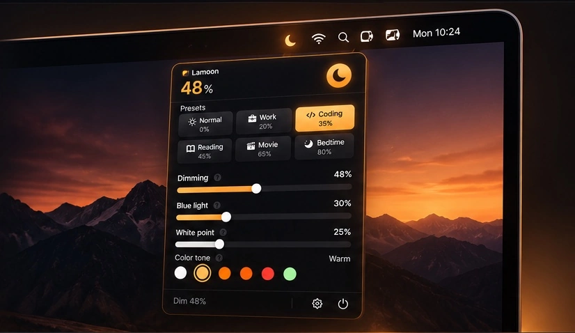
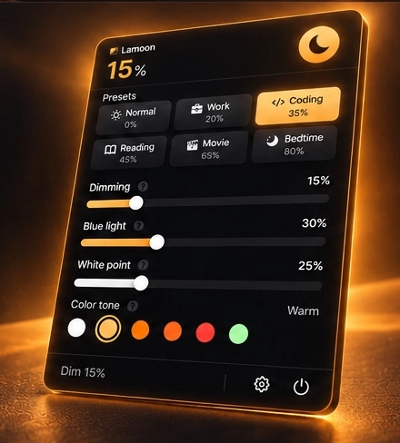

☼
Zusätzliche Abdunklung
Zusätzliche softwarebasierte Abdunklung mit einem Regler bis 80 %. Das Ergebnis hängt von Display und Modus ab.
Wenn dein Mac auch auf der niedrigsten Helligkeitsstufe noch zu hell wirkt, bietet Lamoon zusätzliche softwarebasierte Abdunklung und Display-Farbregler in einem Menüleistenfenster. Die App steuert nicht die physische Hintergrundbeleuchtung des Displays.

Für Mac-Nutzer, denen der normale Helligkeitsregler nicht genug Kontrolle bietet: Lamoon bündelt softwarebasierte Abdunklung, Farbanpassungen und Zeitplanung an einem Ort.
Zusätzliche softwarebasierte Abdunklung mit einem Regler bis 80 %. Das Ergebnis hängt von Display und Modus ab.
Verschiebt die angezeigten Farben in Richtung wärmerer Töne. Der Regler misst nicht die abgegebene Blaulichtmenge.
Den Weißpunkt kannst du bis 80 % einstellen – ausschließlich im Display-Gamma-Modus.
Wähle Neutral, Warm, Bernstein, Intensiv, Rot oder Grün.
Normal (0 %), Arbeit (20 %), Code (35 %), Lesen (45 %), Film (65 %) oder Schlafenszeit (80 %).
Lege eigene Start- und Endzeiten fest oder richte den Zeitplan optional nach lokalem Sonnenaufgang und Sonnenuntergang aus. Ein ungefährer Standort wird nur bei aktiviertem Sonnenstands-Zeitplan auf deinem Mac gespeichert.
Auf Wunsch kannst du auch die macOS-Menüleiste abdunkeln, damit der gesamte Schreibtisch dunkler wirkt.
Lamoon kann optional beim Anmelden starten und deine Einstellungen zwischen Sitzungen beibehalten.
Wähle Englisch, Thai, Deutsch, Spanisch, Französisch, Japanisch, Koreanisch oder vereinfachtes Chinesisch – oder die Systemsprache.
Wähle den Film (Overlay)-Modus oder Display Gamma. Weißpunkt ist nur mit Display Gamma verfügbar; die Wirkung hängt vom Display ab.
Lege optional Kürzel zum Ein-/Ausschalten der Abdunklung, zum Anpassen des Dimmwerts und für die Wärmetönung fest. Eigene Tastenkürzel sind standardmäßig deaktiviert.
Die integrierte Display-Diagnose hilft dabei, Kompatibilitäts- oder Abdunklungsprobleme einzugrenzen.
Integrierte und externe Displays gemeinsam abdunkeln. Film (Overlay) ist für alle Displays vorgesehen; Display Gamma hängt von der Display-Unterstützung ab.
Eigene Start- und Endzeiten ohne Standortfreigabe festlegen oder optional dem lokalen Sonnenauf- und -untergang folgen.
Die Abdunklung pausieren, um zur normalen Helligkeit zurückzukehren, und bei Bedarf wieder aktivieren.
Beginne mit einer Voreinstellung und passe das Display anschließend für Schreiben, Programmieren, Lesen oder die Abendstunden an. Lamoon bündelt Abdunklung und Farbregler in einem übersichtlichen Menüleistenfenster.
Dunkler darstellen, als es der normale Helligkeitsregler allein ermöglicht.
Eine wärmere Farbdarstellung wählen – ohne gesundheitliche Wirkversprechen.
Helle Weißtöne im Display-Gamma-Modus anpassen.
Zwischen neutralen, bernsteinfarbenen, roten und grünen Tönen wählen.

Starte in drei Schritten. Ob ein Download verfügbar ist, hängt von den auf GitHub veröffentlichten Builds ab.
Öffne das Lamoon-Projekt auf GitHub und prüfe unter Releases, ob ein Build samt Installationshinweisen verfügbar ist.
Falls Lamoon.app veröffentlicht wurde, folge den Hinweisen zur jeweiligen Version. Ein normales App-Bundle kannst du in Programme verschieben und starten; das Mondsymbol erscheint in der Menüleiste.
Starte mit einer Voreinstellung oder wähle Film und bewege den Abdunklungsregler. Probiere Display Gamma aus, wenn du den Weißpunkt benötigst und dein Display den Modus unterstützt.
Lamoon verändert die Darstellung der Bildinhalte, nicht direkt die physische Hintergrundbeleuchtung des Panels.
Legt eine Abdunklungsebene über das Bild. Das ist die empfohlene Ausweichoption, wenn Gamma-Anpassungen nicht wirken. Wie bei anderen Overlay-basierten Tools kann die Ebene in Screenshots oder Aufnahmen sichtbar sein.
Passt die Gamma-Tabelle des Displays an und aktiviert den Weißpunkt. HDR/XDR-Displays oder andere Bildanpassungs-Tools können die Kompatibilität einschränken.
Passe die Anzeige an Display und Alltag an – ohne medizinische Versprechen.
Den Bildschirm in einem dunklen Raum weiter abdunkeln.
Mit Code oder Arbeit beginnen und Abdunklung sowie Farbton feinjustieren.
Die Voreinstellung Lesen ausprobieren und die Wärme nach Wunsch anpassen.
Mit Film starten: stärkere Abdunklung und neutraler Farbton.
Schlafenszeit mit hoher Abdunklung und Bernsteinton ausprobieren.
Dunkelt alle verbundenen Displays gleichzeitig ab – das integrierte Mac-Display ebenso wie externe Monitore. Film (Overlay) ist für den Einsatz auf allen Displays vorgesehen; Display Gamma hängt von der Unterstützung der Gamma-Tabelle und der jeweiligen Verbindung ab.
Dimme dein eigenes Display in einem dunklen Raum. Teste geteilte und aufgezeichnete Inhalte vorher, da das Film (Overlay) in Aufnahmen sichtbar sein kann.
Verwende für farbkritische Arbeit einen neutralen Farbton und beurteile die endgültige Farbe nicht durch ein zusätzliches Overlay oder eine Display-Anpassung. Lamoon ist kein Kalibrierungstool.
Passe die Helligkeit an deinen Arbeitsplatz an, prüfe farbkritische Entscheidungen aber weiterhin mit deinem üblichen kalibrierten Prüfablauf. Film (Overlay)s können in Aufnahmen erscheinen.
Praktische Ausgangspunkte für die Nutzung. Dies ist keine medizinische Beratung; die Darstellung kann je nach Display variieren.
Wähle Arbeit, Code, Lesen, Film oder Schlafenszeit und passe anschließend die Regler an dein Display und den Raum an.
Film verwendet ein Overlay. Wechsle zu Display Gamma, wenn du Weißpunkt brauchst und dein Display Änderungen der Gamma-Tabelle korrekt umsetzt.
Lege manuelle Start- und Endzeiten ohne Standortzugriff fest oder aktiviere die Sonnenstands-Zeitplan für lokale Sonnenauf- und -untergangszeiten.
Bei aktivem automatischem Nachtmodus kann Night Boost die Abdunklung einmal pro Nacht auf 50 % und die Wärme auf 35 % erhöhen. Zurückgesetzt werden nur die von der Funktion angehobenen Werte, sofern du sie danach nicht selbst geändert hast.
Pausiere die Abdunklung fünf Sekunden vor einem Screenshot. Screenshot-Modus ist nicht dafür vorgesehen, die Abdunklung während einer ganzen Aufnahme oder Besprechung zu pausieren.
Die ersten vier Zeilen entsprechen den Voreinstellung-Werten der App. Die Tageslicht-Zeile ist ein manueller Ausgangspunkt, kein gespeichertes Voreinstellung.
| Situation | Abdunklung | Wärme | Farbton | Weißpunkt* |
|---|---|---|---|---|
| Programmieren spätabends | 35 % | 10 % | Warm | 15 % |
| Lesen | 45 % | 30 % | Warm | 25 % |
| Filme ansehen | 65 % | 0 % | Neutral | 0 % |
| Vor dem Schlafengehen | 80 % | 45 % | Bernstein | 35 % |
| Tagsüber / heller Raum | 0 % | 0 % | Neutral | 0 % |
* Weißpunkt ist nur im Display-Gamma-Modus verfügbar. Voreinstellung-Werte sind Ausgangspunkte; wahrgenommene Helligkeit und Farbe hängen von Display und Modus ab.
Film und Display Gamma arbeiten unterschiedlich. Diese Übersicht beschreibt das vorgesehene Verhalten und häufige Einschränkungen, ist aber keine Zertifizierung jedes Displaymodells. Der Anschlusstyp allein garantiert keine Unterstützung für Display Gamma.
| Display-Konfiguration | Film (Overlay) | Display Gamma | Hinweise |
|---|---|---|---|
| Integriertes MacBook-LCD | Für von macOS erkannte Displays vorgesehen | Hängt von Display- und macOS-Unterstützung ab | Wenn Gamma-Änderungen nicht wie erwartet wirken, Film testen. |
| Integriertes mini-LED / HDR / XDR | Fallback bei Einschränkungen der Gamma-Anpassung | Kann Einschränkungen haben | HDR/EDR kann Gamma-Tabellenänderungen beeinflussen. |
| Externer Monitor über USB-C / Thunderbolt | Für von macOS erkannte Displays vorgesehen | Hängt von der Gamma-Tabellen-Unterstützung des Monitors ab | Die Kompatibilität variiert je nach Modell und macOS-Konfiguration. |
| Externer Monitor über HDMI | Für von macOS erkannte Displays vorgesehen | Hängt von der Gamma-Tabellen-Unterstützung des Monitors ab | Kein Anschlusstyp garantiert, dass Display Gamma funktioniert. |
| iPad-Display über Sidecar | Kann von macOS bereitgestellte Displays ansprechen | Nicht garantiert; Ergebnisse variieren | Mit der aktuellen macOS- und Sidecar-Konfiguration testen. |
| Projektor | Kann von macOS bereitgestellte Displays ansprechen | Hängt von Projektor und Signalweg ab | Vor einer Präsentation testen. |
| Gespiegelte Displays | Hängt von der von macOS gemeldeten Display-Anordnung ab | Hängt von Displays und Spiegelkonfiguration ab | Bei unerwarteten Ergebnissen Film testen. |
Wenn ein externer Bildschirm nicht wie erwartet dunkler wird, teste zuerst Film. Halte für die Fehlersuche Mac-Modell, macOS-Version, Displaymodell, Verbindungstyp und ausgewählten Modus fest.
Kurze Erläuterungen zu den Display-Reglern und Einstellungen auf dieser Seite.
Verringert die sichtbare Helligkeit von Bildschirminhalten durch ein Overlay oder eine Anpassung der Gamma-Tabelle, statt die physische Hintergrundbeleuchtung direkt zu steuern.
Eine halbtransparente Ebene über dem Displaybild. Sie ist Lamoon’s Overlay-Methode und kann in Screenshots oder Aufnahmen sichtbar sein.
Passt die Gamma- bzw. Transfer-Tabelle des Displays an. Dadurch wird Weißpunkt verfügbar; die Unterstützung hängt vom Display ab.
Reduziert die Intensität heller Weißbereiche unabhängig von der gesamten Abdunklung. Nur im Display-Gamma-Modus verfügbar.
Verschiebt die Bildfarben in Richtung wärmerer Töne. Sie misst nicht die Menge des ausgestrahlten blauen Lichts und bestätigt keine bestimmte Blockierungswirkung.
Ein auswählbarer Farbfilter: Neutral, Warm, Bernstein, Intensiv, Rot oder Grün.
Eine gespeicherte Kombination aus Abdunklung, Wärme, Weißpunkt und Farbton.
Ein optionaler Zeitplan nach lokalem Sonnenauf- und -untergang. Der ungefähre Standort wird nur bei aktivierter Funktion über die macOS-Ortungsdienste angefordert; die Koordinaten werden auf zwei Dezimalstellen gerundet und lokal auf dem Mac gespeichert.
Bei aktivem automatischem Nachtmodus kann Night Boost die Abdunklung einmal pro Nacht auf 50 % und die Wärme auf 35 % erhöhen. Es stellt nur die von ihm erhöhten Werte wieder her, und nur, wenn du sie seitdem nicht geändert hast.
Pausiert die Abdunklung fünf Sekunden lang, damit ein Standbild ohne Abdunklung aufgenommen werden kann.
Erkennt Display-Änderungen im laufenden Betrieb, etwa das Anschließen oder Entfernen eines externen Monitors.
Die Werkzeuge verfolgen unterschiedliche Ziele und nutzen unterschiedliche Methoden. Die Tabelle fasst den Schwerpunkt zusammen; prüfe vor der Auswahl die aktuelle Dokumentation.
| Funktion | Lamoon | Night Shift | f.lux | MonitorControl |
|---|---|---|---|---|
| Hauptzweck | Zusätzliche Software-Abdunklung und Farbtonsteuerung | Zeitgesteuerte wärmere Farben | Zeitabhängige Farbanpassung und Farbeffekte | Steuerung von Helligkeit, Kontrast und Lautstärke des Displays |
| Zusätzliche Software-Abdunklung | Regler bis 80 % | Kein eigener Regler für zusätzliche Abdunklung | Kein eigener Mac-Abdunklungsregler; Farbeffekte können die wahrgenommene Dunkelheit verändern | Software-Abdunklung und Hardware-Steuerung; abhängig von Display und Protokoll |
| Farbsteuerung | Sechs Farbtöne und Wärmeregler | Anpassung der Farbtemperatur in Richtung warm | Farbtemperatur und weitere Farbeffekte | Nicht der Hauptzweck; Helligkeit und Kontrast werden unterstützt |
| Weißpunkt | Bis 80 %, nur Display Gamma | Kein eigener Weißpunktregler | Kein eigener Weißpunktregler wie bei Lamoon | Kein eigener Weißpunktregler wie bei Lamoon |
| Zeitplanung | Manuelle Zeiten oder optional Sonnenaufgang/-untergang | Individueller Zeitplan oder Sonnenaufgang/-untergang | Zeitplan anhand von Uhrzeit und Standorteinstellungen | Primär Displaysteuerung, kein spezielles Nacht-Zeitplanwerkzeug |
| Physische Hintergrundbeleuchtung | Wird nicht direkt gesteuert | Ändert Displayfarben über macOS | Steuert die Mac-Hintergrundbeleuchtung nicht direkt | Kann die Hardware-Helligkeit kompatibler externer Displays steuern |
Offizielle Quellen: Apple Night Shift · f.lux · MonitorControl. Funktionen und Kompatibilität können sich ändern; dies ist ein Überblick, keine vollständige Funktionsliste.
Ja. Lamoon ergänzt eine softwarebasierte Abdunklung mit einem Regler bis 80 %. Das sichtbare Ergebnis hängt von Display und Modus ab.
Nein. Je nach Modus nutzt Lamoon ein Overlay oder passt die Gamma-Tabelle des Displays an. Die physische Hintergrundbeleuchtung wird nicht direkt reduziert.
Es sind zwei softwarebasierte Darstellungsarten. Kompatibilität und Bildwirkung können je nach Display und Modus variieren. Der Weißpunkt (bis 80 %) ist nur im Display-Gamma-Modus verfügbar.
Nein. Er verschiebt den Farbton in Richtung wärmerer Farben; er misst nicht, wie viel Blaulicht das Display abgibt. Die Anzeige reicht von 0 bis 100 %, die interne Tönungsmischung ist jedoch auf 80 % begrenzt.
Sie bieten schnelle Startwerte für die Abdunklung: Normal (0 %), Arbeit (20 %), Code (35 %), Lesen (45 %), Film (65 %) und Schlafenszeit (80 %). Gespeicherte Werte für Wärme, Weißpunkt und Farbton können ebenfalls übernommen werden.
Nur wenn du diese optionale Funktion aktivierst. Lamoon fragt über die macOS-Ortungsdienste einen ungefähren Standort ab, rundet die Koordinaten auf zwei Dezimalstellen (je nach Ort ungefähr im Kilometerbereich) und speichert sie lokal. Wenn du die Freigabe verweigerst oder kein Standort verfügbar ist, kannst du einen manuellen Zeitplan nutzen.
Bei aktivierter automatischer Nachtfunktion kann Night Boost einmal pro Nacht Dimmen auf 50 % und Wärme auf 35 % erhöhen. Zurückgesetzt werden nur Werte, die Night Boost angehoben hat – und nur, wenn du sie anschließend nicht selbst geändert hast.
Der Screenshot-Modus pausiert die Abdunklung für fünf Sekunden, damit du ein Standbild aufnehmen kannst. Er ist nicht für dauerhaftes Screen-Sharing gedacht.
Die Abdunklung des Sperrbildschirms ist standardmäßig aktiviert und lässt sich ausschalten. Auf dem Sperrbildschirm ist die Abdunklung auf höchstens 45 % begrenzt.
Lamoon speichert Einstellungen und ungefähre Koordinaten für den Sonnenstands-Zeitplan lokal auf deinem Mac. Der für diese Website geprüfte Quellcode enthält keine Analyse-, Werbe-, Telemetrie- oder Crash-Reporting-SDKs und keinen Code zum Hochladen von Daten über das Netzwerk. Künftige Versionen können sich unterscheiden. Für den Zugriff auf die Website und GitHub zum Anzeigen oder Herunterladen von Projektdateien ist eine Internetverbindung erforderlich.
Lamoon zielt auf macOS 13 und neuer. Der Display-Gamma-Modus kann mit HDR-Displays oder anderen Tools, die die Bildausgabe verändern, Einschränkungen haben. Das Ergebnis hängt von Mac, Display und Modus ab.
Mit Control–Befehl–0. Eigene Tastenkürzel sind standardmäßig deaktiviert und können in den Einstellungen aktiviert werden.
Ja. Du kannst manuelle Start- und Endzeiten festlegen oder den Zeitplan nach Sonnenaufgang und Sonnenuntergang ausrichten. Für einen manuellen Zeitplan ist kein Standortzugriff nötig; ein ungefährer Standort wird nur bei aktiviertem Sonnenstands-Zeitplan abgefragt.
Ja. Pausiere die Abdunklung, um zur normalen Bildschirmhelligkeit zurückzukehren, und setze sie fort, wenn du wieder stärker abdunkeln möchtest.
Bei Auswahl von „Neutral“ wird die Wärmetönung pausiert und der Regler „Wärme“ deaktiviert, während sein aktueller Wert erhalten bleibt. Wenn du einen anderen Farbton auswählst, steht der gespeicherte Reglerwert wieder zur Verfügung.
Öffne das Projekt auf GitHub und prüfe unter Releases, ob ein App-Build veröffentlicht wurde. Folge gegebenenfalls den Versionshinweisen; ein übliches Lamoon.app-Bundle kann in Programme verschoben und von dort gestartet werden.
Lamoon läuft in der macOS-Menüleiste und nicht wie eine gewöhnliche Dock-App. Suche nach dem Mondsymbol neben den Menüleisten-Steuerelementen.
Der geprüfte App-Quellcode enthält keinen Netzwerk-Upload-Code; die zentralen Displayfunktionen arbeiten lokal. Zum Öffnen der Website oder Herunterladen von GitHub brauchst du weiterhin Internet.
Aktuelle Verfügbarkeit und Preise findest du auf GitHub und in den veröffentlichten Versionshinweisen. Gehe nicht von einer Mac-App-Store-Version aus, solange das Projekt sie nicht ankündigt.
Prüfe die Architekturangabe des heruntergeladenen Builds. Ein Universal-Build unterstützt Intel und Apple Silicon; erforderlich ist macOS 13 oder neuer.
Manche Displays reagieren nicht wie erwartet auf Änderungen der Gamma-Tabelle. HDR/XDR oder andere Display-Tools können die Kompatibilität beeinflussen. Probiere als Alternative den Film-Modus.
Beide können gleichzeitig laufen, doch das kombinierte Farbergebnis kann variieren. Passe bei unerwarteten Farben jeweils nur ein Werkzeug an oder nutze Film.
Mehrere Tools zur Bildausgabe können sich gegenseitig beeinflussen. Wenn du f.lux nutzt, probiere Film oder teste jeweils nur ein Display-Anpassungs-Tool.
Lamoon bietet softwarebasierte Display-Anpassungen. Das Ergebnis hängt von Monitor, Verbindung, macOS und Modus ab. Die physische Hintergrundbeleuchtung steuert Lamoon nicht direkt.
Display Gamma kann bei HDR/XDR-Displays eingeschränkt sein. Probiere Film, wenn Gamma-Anpassungen nicht wie erwartet funktionieren.
Das Film (Overlay) kann in Screenshots oder Aufnahmen erscheinen. Screenshot-Modus pausiert die Abdunklung fünf Sekunden für ein Standbild und ist nicht für dauerhaftes Screen-Sharing gedacht.
Ja. Lege manuelle Start- und Endzeiten fest. Standortzugriff ist nur für den optionalen Zeitplan nach Sonnenaufgang und Sonnenuntergang erforderlich.
Einstellungen werden lokal im macOS-App-Container gespeichert. Um gespeicherte Einstellungen und lokale Standortdaten zu entfernen, beende Lamoon und lösche den App-Container aus deiner Benutzer-Library. Dadurch werden auch gespeicherte App-Einstellungen gelöscht.
Eigene Tastenkürzel sind standardmäßig deaktiviert. Aktiviere sie in den Einstellungen. Wenn eine andere App dieselbe Kombination verwendet, wähle eine andere.
Ressourcenverbrauch und Akkuwirkung hängen vom gewählten Modus, den angeschlossenen Displays und der aktuellen macOS-Auslastung ab. Wir haben keine kontrollierten Akkutests veröffentlicht und können daher keine vernachlässigbare Auswirkung versprechen. Du kannst die Energieauswirkung von Lamoon in der Aktivitätsanzeige auf deinem Mac prüfen.
Ja. Lamoon ist ein Menüleisten-Dienstprogramm und kann die Display-Einstellungen weiter anwenden, wenn das Bedienfeld geschlossen ist. Das Panel muss nicht geöffnet bleiben.
Wähle im Lamoon-Menü „Beenden“ oder verwende die Beenden-Funktion der App. Beim Beenden versucht Lamoon, geänderte Display-Gamma-Tabellen wiederherzustellen. Wenn die Darstellung weiterhin ungewöhnlich ist, öffne Lamoon erneut und setze die Anpassungen mit Control–Befehl–0 zurück.
Der automatische Start bei der Anmeldung ist optional und standardmäßig deaktiviert. Aktiviere ihn in den Lamoon-Einstellungen, wenn die App beim Anmelden starten soll.
Lamoon soll die von von macOS erkannten Bildschirme anpassen, darunter integrierte und externe Displays. Film (Overlay)s können gemeldete Displays abdecken. Display Gamma hängt vom jeweiligen Bildschirm ab; wenn die Gamma-Anpassung nicht möglich ist, verwendet die App ein Overlay als Fallback. Das Ergebnis hängt weiterhin von Hardware und macOS-Konfiguration ab.
Lamoon reagiert auf Änderungen der Display-Konfiguration von macOS und aktualisiert die Overlays. Nach der Erkennung des Monitors sollte es sich anpassen, eventuell mit kurzer Verzögerung. Wenn das Ergebnis nicht stimmt, teste Film oder öffne Lamoon erneut.
Das Verhalten hängt davon ab, wie macOS die Spiegelanordnung meldet und welcher Modus ausgewählt ist. Lamoon verarbeitet die von macOS erkannten Displays, garantiert aber kein identisches Ergebnis für jede Spiegelkonfiguration. Teste bei unerwartetem Verhalten Film und prüfe die Display-Konfiguration.
Wenn macOS das Sidecar-iPad als Display bereitstellt, kann das Film (Overlay) auf von macOS gemeldete Displays angewendet werden. Display-Gamma-Unterstützung und sichtbares Ergebnis können variieren. Nicht jede Sidecar-Konfiguration wurde unabhängig zertifiziert.
Die benutzerdefinierten Abdunklungsregler bieten Bedienungshilfen-Bezeichnungen und -Werte, können Tastaturfokus erhalten und mit Pfeiltasten angepasst werden. Für umfassendere Navigation aktiviere „Tastatursteuerung“ in den macOS-Systemeinstellungen. Die Navigation kann je nach Steuerelement und macOS-Version variieren.
Lamoon bietet für die eigenen Regler Bedienungshilfen-Bezeichnungen und anpassbare Aktionen. Nicht jeder Ablauf wurde mit jedem Screenreader getestet. Prüfe daher den aktuellen Build mit VoiceOver, bevor du dich auf einen bestimmten Ablauf verlässt. Der Film-Modus ist visuell und bietet keine gesprochene VoiceOver-Ausgabe.
Einige Steuerelemente, darunter die Abdunklungsregler, unterstützen Tastaturfokus und die Anpassung mit Pfeiltasten. Aktiviere „Vollständiger Tastaturzugriff“ in den macOS-Systemeinstellungen, um umfassender zu navigieren. Die Tastaturbedienung variiert je nach Steuerelement und macOS-Version; prüfe daher den Ablauf in deiner installierten Version.
Starte Lamoon mit open -a Lamoon --args --safe im abgesicherten Modus. Dabei verwendet die App sichere Standardwerte für die Anzeige statt gespeicherter Einstellungen. Das hilft bei Problemen mit gespeicherten Einstellungen oder Display-Anpassungen; es ist kein allgemeines Werkzeug zum Löschen von Daten.
Das Film (Overlay) kann je nach Aufnahmemethode in Screenshots, Aufzeichnungen oder manchen Bildschirmfreigaben sichtbar sein. Screenshot-Modus pausiert die Abdunklung für fünf Sekunden für ein Standbild und ist keine dauerhafte Bildschirmfreigabe. Teste es vor einem Meeting oder verwende Display Gamma, wenn dein Display dies unterstützt.
Lamoon kann neben Stage Manager laufen. Film verwendet jedoch Overlay-Fenster, deren Verhalten beim Wechsel zwischen macOS-Fenstern und Spaces variieren kann. Display Gamma passt die Übertragungstabelle des Displays an, wird aber nicht von jedem Display unterstützt. Teste beide Modi auf deinem Mac; die Kompatibilität mit Stage Manager ist nicht für jede Konfiguration garantiert.
Der macOS-Dunkelmodus verändert das Erscheinungsbild unterstützter Oberflächen und Apps. Lamoon konzentriert sich auf softwarebasierte Abdunklung und Farbtonsteuerung: bis zu 80 % Abdunklung, sechs Farbtöne und Weißpunkt im Display-Gamma-Modus. Das Ergebnis hängt von Display und Modus ab.
Die hier beschriebene Version von Lamoon benötigt weder ein Konto noch eine Anmeldung. Der für diese Website geprüfte Quellcode enthält keine Werbe- oder Analyse-SDKs. Künftige Versionen können sich unterscheiden.
Lamoon ist eine macOS-Menüleisten-App für alle, die Abdunklung und Farbton ihres Bildschirms besser steuern möchten – besonders in dunklen Räumen, am Abend oder bei konzentrierter Arbeit.
Hilfe zur Einrichtung und Fehlerbehebung findest du auf der Support-Seite.